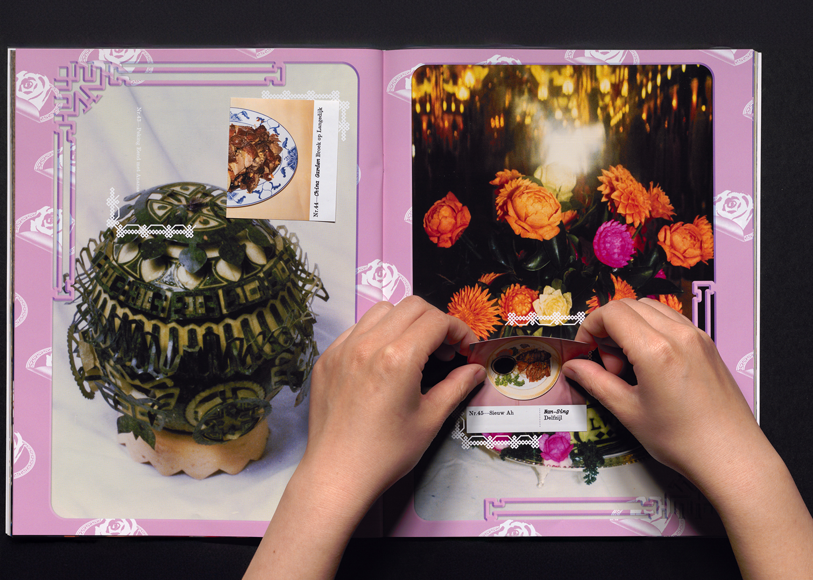
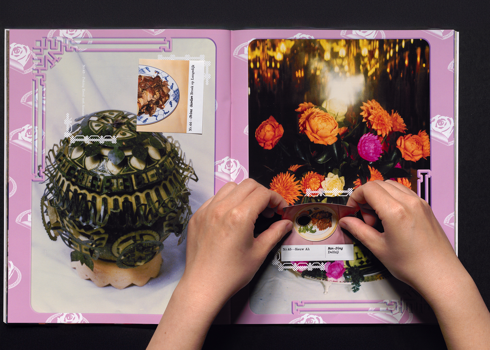

Chinees-Indische Restaurant Stickeralbum
2024
graphic design
book design
publishing
It was my pleasure to design the “Chinees-Indische Restaurant Stickeralbum”, a project of Benjamin Li about his ethnographic research on Chinees-Indisch restaurants in the Netherlands, its development and disappearance, entangled with his personal history and family archive.
Having worked on this project for one year and half, I was not only touched by Benjamin’s love, nostalgia, and passion on the topic, but also his daring approach gluing the societal with the personal, the persistence and dedication in his methodology, and eventually the playfulness in the artistic presentation.
With “Chinees-Indische Restaurant Stickeralbum”, you can browse through Benjamin’s family archive, read about his research and thoughts, collect, exchange, and play with the stickers that contain a unique selection of the dishes he photographed from over 1200 Chinees-Indische restaurants he visited throughout the years.
Having worked on this project for one year and half, I was not only touched by Benjamin’s love, nostalgia, and passion on the topic, but also his daring approach gluing the societal with the personal, the persistence and dedication in his methodology, and eventually the playfulness in the artistic presentation.
With “Chinees-Indische Restaurant Stickeralbum”, you can browse through Benjamin’s family archive, read about his research and thoughts, collect, exchange, and play with the stickers that contain a unique selection of the dishes he photographed from over 1200 Chinees-Indische restaurants he visited throughout the years.
Credits:
Concept, photography and text:
Benjamin Li
Research and editorial:
Benjamin Li & Ka-tjun Hau
Text edit and English translation:
Renske Vos
Chinese translation:
Yen-ting Kuan
Book design:
Kexin Hao
Web design:
Xiaoyuan Gao & Marie Madonna
Assistance:
Junhao Xiang, Tyler Chan & Lianne Smit
Printing:
NPN Drukkers
Presentation
2024.5.18
Verhalenhuis Belvedere
Rotterdam, NL
talk
book launch
2024.5.30~6.2
Rijksacademie
Amsterdam, NL
exhibition
Open Studios 2024
2024.7.14
PrintRoom
Rotterdam, NL
talk
Book Are Bridges


 
